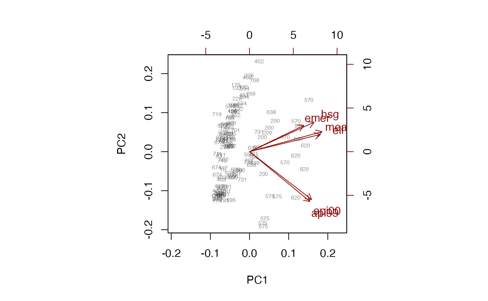
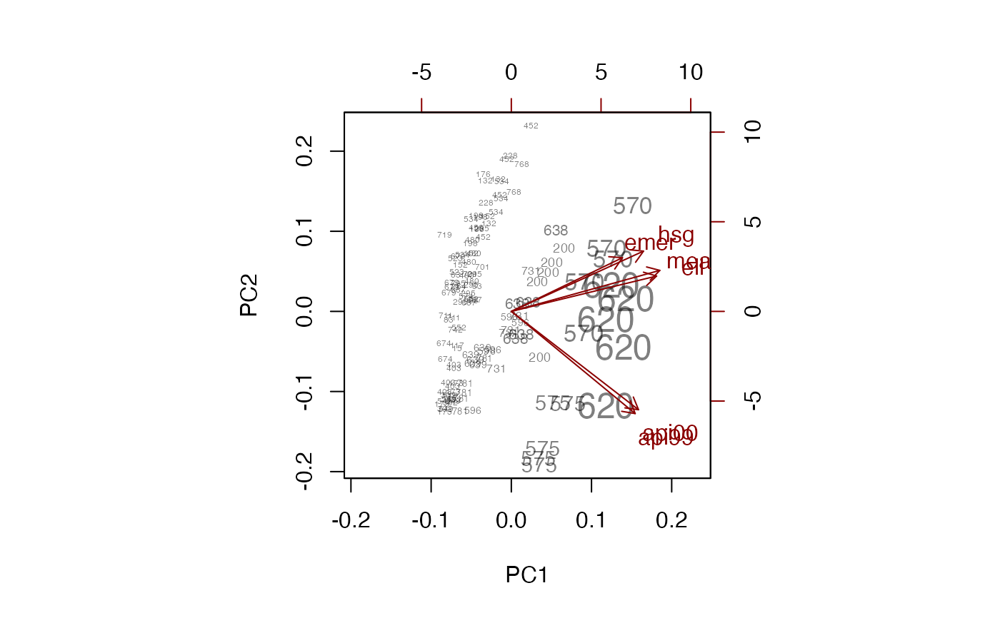

svyprcomp.RdComputes principal components using the sampling weights.
svyprcomp(formula, design, center = TRUE, scale. = FALSE, tol = NULL, scores = FALSE, ...)
# S3 method for svyprcomp
biplot(x, cols=c("black","darkred"),xlabs=NULL,
weight=c("transparent","scaled","none"),
max.alpha=0.5,max.cex=0.5,xlim=NULL,ylim=NULL,pc.biplot=FALSE,
expand=1,xlab=NULL,ylab=NULL, arrow.len=0.1, ...)model formula describing variables to be used
survey design object.
Center data before analysis?
Scale to unit variance before analysis?
Tolerance for omitting components from the results; a proportion of the standard deviation of the first component. The default is to keep all components.
Return scores on each component? These are needed for biplot.
A svyprcomp object
Base colors for observations and variables respectively
Formula, or character vector, giving labels for each observation
How to display the sampling weights: "scaled" changes the size of the point label, "transparent" uses opacity proportional to sampling weight, "none" changes neither.
Opacity for the largest sampling weight, or for all points if weight!="transparent"
Character size (as a multiple of par("cex")) for the largest sampling weight, or for all points if weight!="scaled"
Graphical parameters
See biplot
See link{biplot.prcomp}
Other arguments to prcomp, or graphical parameters for biplot
svyprcomp returns an object of class svyprcomp, similar to
class prcomp but including design information
data(api)
dclus2<-svydesign(id=~dnum+snum, fpc=~fpc1+fpc2, data=apiclus2)
pc <- svyprcomp(~api99+api00+ell+hsg+meals+emer, design=dclus2,scale=TRUE,scores=TRUE)
pc
#> Standard deviations (1, .., p=6):
#> [1] 2.00614662 1.06784643 0.72819673 0.51593850 0.18862407 0.05511512
#>
#> Rotation (n x k) = (6 x 6):
#> PC1 PC2 PC3 PC4 PC5 PC6
#> api99 0.3831145 -0.5943589 0.08306768 -0.06979896 0.022302291 -0.69834894
#> api00 0.3934925 -0.5718779 0.03836692 -0.07704907 -0.008208835 0.71459312
#> ell 0.4493746 0.2056601 -0.25640658 0.58763687 0.587114958 0.00100877
#> hsg 0.4089487 0.3506756 -0.21317497 -0.77628465 0.248055264 -0.01395416
#> meals 0.4594419 0.2384659 -0.32112577 0.19296434 -0.768508662 -0.03293318
#> emer 0.3436909 0.3123423 0.88165644 0.06341416 -0.050933992 0.01962417
biplot(pc, xlabs=~dnum, weight="none")

biplot(pc, xlabs=~dnum,max.alpha=1)
biplot(pc, weight="scaled",max.cex=1.5, xlabs=~dnum)
